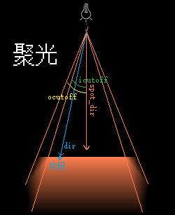
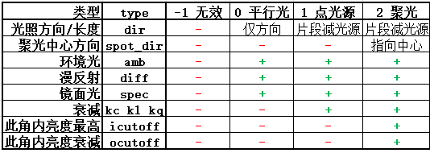

lt.type 决定。
接下来将会介绍其余两种光源。
vec3(-0.2f,-1.0f,-0.3f)。lt.type=0;
传入 dir，同时注释掉fs中计算dir的代码：
lt.dir=vec3(-0.2f,-1.0f,-0.3f); // type 0
//lt.dir=f_pos-lt_pos;
注释掉我们暂时不需要的衰减系数和光源位置：
//lt.kc=1.0f;
//lt.kl=0.09f;
//lt.kq=0.032f;
//sd.set3f("lt_pos",lt_pos);
//uniform vec3 lt_pos;

聚光与点光源的区别：type ：lt.type=2;
传入 spot_diricutoffocutoff：
lt.spot_dir=cam.get_front();
lt.icutoff=12.5f;
lt.ocutoff=17.5f;
修改光源位置：sd.set3f("lt_pos",cam.pos);
